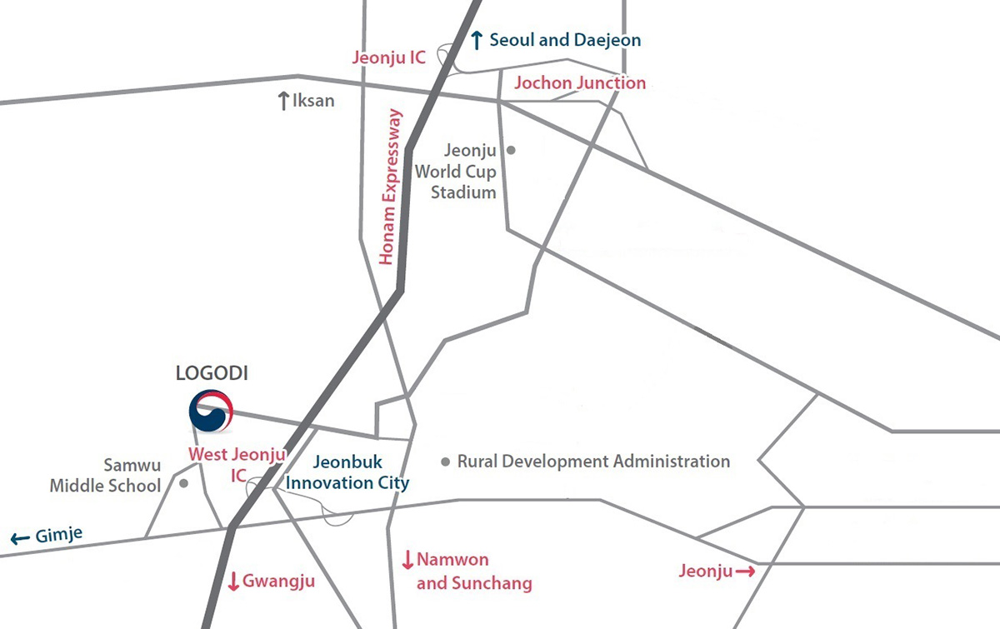

About LOGODI
Directions

LOGODI runs a free shuttle service for trainees to the institute on Mondays and back to transportation hubs on Fridays.
For those commuting via Jeonju by bus or Iksan by train, separate shuttles are available at Jeonju Express Bus Terminal and Iksan Station every Monday, for departure at 9:25 AM and arrival at LOGODI around 9:50 AM. Every Friday, they depart from LOGODI at 12:15 PM and arrive back in Jeonju/Iksan around 12:45 PM.
| Sortation | Route | Time | Location |
|---|---|---|---|
| Mon | Jeonju Express Bus Terminal to LOGODI | 09:25 | On the bridge, across from the stop for Bus 72 (Buddhist Center/IMI) |
| Iksan Station to LOGODI | 09:25 | ||
| Fri | Jeonju Express Bus Terminal to LOGODI | 12:45 | Transfer area on the right after exiting Iksan Station |
| Iksan Station to LOGODI | 12:45 |
※ Contact : Lim Jun-seok | +82 (0)63-907-5155
Direct buses to LOGODI run from Seoul via Express Bus Terminal (Central City), with a travel time of around 2 hrs 50 min.
Tickets can be purchased in advance at the terminal with cash or credit card or on board the bus with cash, and are 13,400 won for a standard, one-way fare. The departure timetable is below, which is subject to change at the discretion of the company.
| Seoul → LOGODI | 06:40 | 08:20 | 10:50 | 12:40 | 15:10 | 17:20 | 19:30 |
|---|---|
| LOGODI → Seoul | 06:55 | 08:35 | 10:55 | 12:55 | 15:25 | 17:25 | 19:25 |
By local bus in Jeonju, Bus 72 can be taken from outside the express or intercity bus terminals or Jeonju Stn. to LOGODI, and payment is accepted on board with cash or transportation card. Further information on local buses can be found in English, Chinese, and Japanese via the Jeonju City Traffic Information Center.
KTX, Saemaeul, and Mugunghwa trains depart from cities across Korea, and the closest stations to LOGODI are Jeonju and Iksan.
LOGODI can be reached by local bus from Jeonju Station or free shuttle from Iksan Station.
Please see the relevant section above for further information on connections.
| From Seoul | Gyeongbu Expressway → Cheonan JC (Nonsan-Cheonan Expressway) toward Sejong (Gwangju) → Nonsan JC (Honam Expressway) toward Iksan (Gwangju) → West Jeonju IC → West Jeonju TG → Toward Iseo → Kongjwipatjwi-ro toward Iseo → LOGODI |
|---|---|
| From Gwangju | Honam Expressway → West Jeonju IC → West Jeonju TG → Toward Iseo → Kongjwipatjwi-ro toward Iseo → LOGODI |
| From Daegu | Hwawon-Okpo JC (Olympic Expressway) → Jangsu JC (Iksan-Pohang Expressway) → Iksan JC (Honam Expressway) → West Jeonju IC → Toward Iseo → Kongjwipatjwi-ro toward Iseo → LOGODI |
| From Busan | Naengjeong JC (Namhae Expressway) → Jinju JC (Tongyeong-Daejeon Expressway) → Jangsu JC (Iksan-Pohang Expressway) → Iksan JC (Honam Expressway) → West Jeonju IC → Toward Iseo → Kongjwipatjwi-ro toward Iseo → LOGODI |
LOGODI can alternatively be located on navigation devices by searching the place "지방자치인재개발원" or address "전라북도 완주군 이서면 반교로 150."